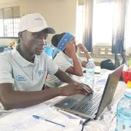
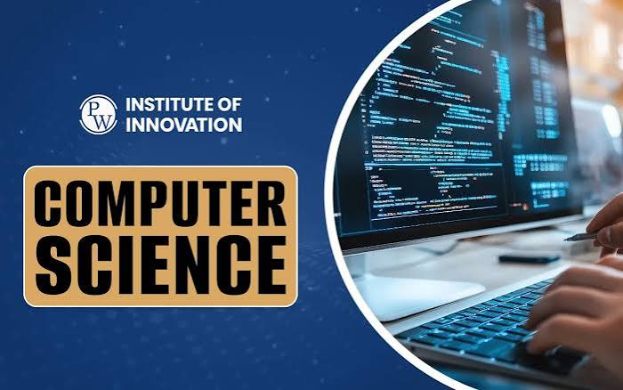

Founder & Full Stack Developer PulseResume
2024 Present
- Built a resume web app with React, Node.js, and MongoDB
- Implemented PDF export, real-time editing, and template customization
- Managed product roadmap, user testing, and feature prioritization
Digital Content Creator & Full Stack Developer
+256 771 310 625 | temainnocent21@gmail.com | GitHub | Jump to my favorite modules
I'm a Digital Content Creator, Full Stack Developer, and Recovery Lead based in Arua, Uganda. I specialize in remote collaboration, AI-assisted content creation, and digital advocacy. As a professional Python developer, I work across backend development, automation, and AI-driven workflows.
I'm the founder of PulseResume (a live resume-building MVP) and PolyCode Studio (an online IDE currently pivoting). I'm passionate about using technology to empower communities and amplify voices.


A few modules from ITM 1131 that stuck with me so far:
| Module | Why it stood out |
|---|---|
| Web applications developments | Directly leveled up this portfolio page — I finally understand semantic markup, not just divs everywhere. |
| discrete mathematics | The mathematics prepares us for indepth understanding of algorithms and data structures. |
| Computer Repair and Assembly | Provided hands-on experience with hardware components and troubleshooting techniques. |
2024 Present
2024 till Present (pivoting)
Arua, Uganda · 2024 – Present
June 2026 up to September 2026
2026 till Present
2024 till Present
2024 Present
2024 till Present
Ronald Baddaki Abassa
Managing Director, Rab Sports Management & Media Co.
0700518660
Joel Gadaffi
Sports Editor, Rab Sports Management and Media Company
0782733645
Mrs. Pauline Achan
Regional Managing Director, DW Akademie Uganda
0782975101
Mr. Adjusi Benard
Sub-county Election Administrator, Oleba Sub-county
0771836825